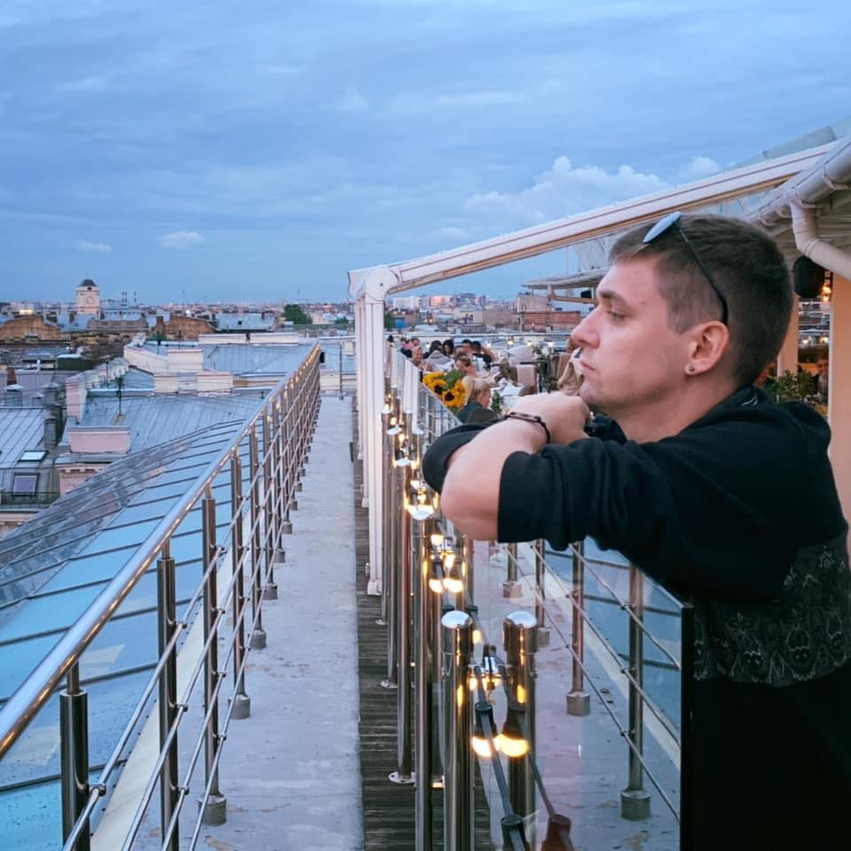

Slava Lukyanov - Austin's Bachelor of the Year

Summary
A smart, wise, good looking brand developer with expertise in biohacking, Amazon, and Tinder.
Education
- DePaul University, 2013-2015, Bachelor of Science, Finance.
- Life is your best educator, experience is your best degree. (Quote from Vkontakte)
Reason's for Nomination:
- Tall
- 6'2
- 187cm (190cm, fine)
- Good taste in bars and restaurants
- Good sense of fashion, besides the Versace shirt
- Career driven
- Wise
- Good sense of humor
- Great heart
Skills
- Cold Plunging ⭐️⭐️⭐️⭐️⭐️
- Ability to drive manual transmission ⭐️⭐️⭐️⭐️⭐️
- Deep knowledge of 90s-2000s Russian Music ⭐️⭐️⭐️⭐️⭐️
- Driving a motorcycle ⭐️⭐️⭐️⭐️⭐️
- Dancing like no one's watching ⭐️⭐️⭐️⭐️⭐️
- Boxing ⭐️⭐️⭐️⭐️⭐️
- Yoga ⭐️⭐️⭐️⭐️⭐️
- Deep conversations⭐️⭐️⭐️⭐️⭐️
- Good Cha Cha selection⭐️
Certifications
Best of the best by Anastasiia BQ Horbes Magazine
Other